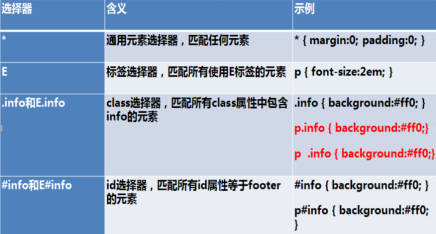
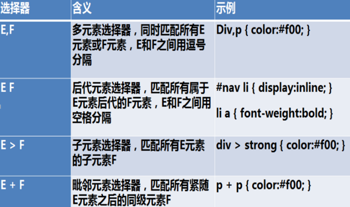
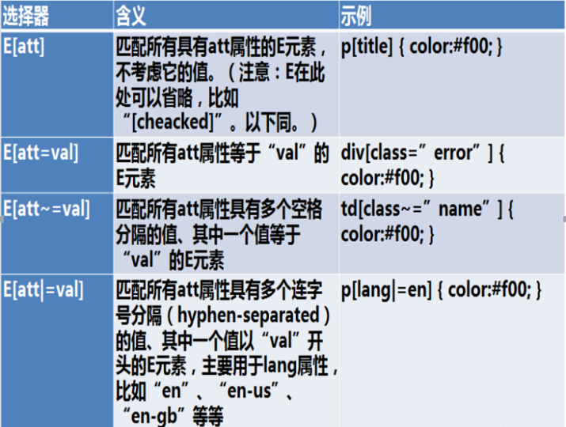
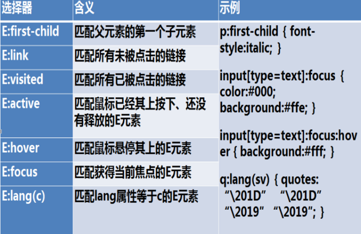
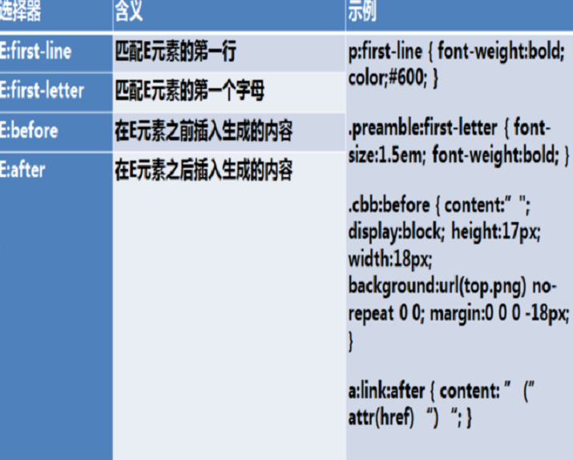
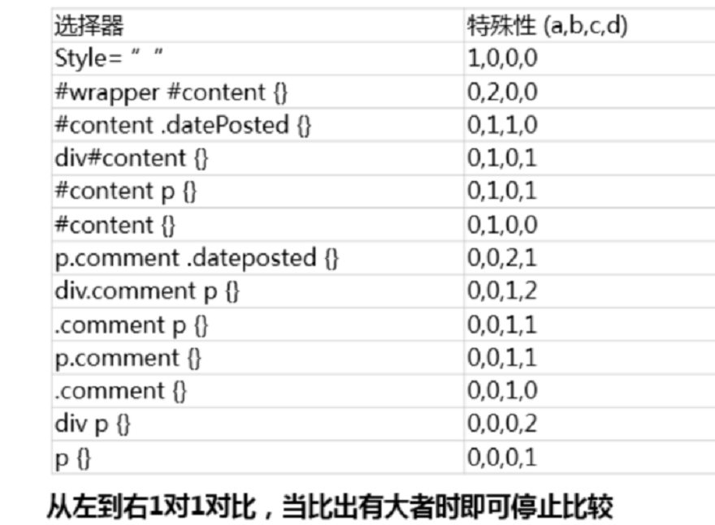

<!DOCTYPE html>
<html>
<head><meta name="generator" content="Hexo 3.8.0">
  <meta charset="utf-8">
  
  <title>前端基础考题4 | LIUXUEWEN&#39;S BLOG</title>
  <meta name="viewport" content="width=device-width, initial-scale=1, maximum-scale=1">
  
    <meta name="keywords" content="LIUXUEWEN,LIUXUEWEN's Blog">
  
  <meta name="description" content="一、解释一下CSS的盒子模型？  1、基本概念  CSS盒模型本质上是一个盒子，封装周围的HTML元素，它包括：边距，边框，填充，和实际内容。  盒模型有两种标准的，一个是标准模型，一个是IE模型。         从上图可看出在标准模型中，  标准模型宽= content + padding-(left and right) + border-(left and right) + margin-">
<meta name="keywords" content="前端-考题">
<meta property="og:type" content="article">
<meta property="og:title" content="前端基础考题4">
<meta property="og:url" content="http://liuxuewen-site.github.io/2018/02/07/frontEnd-basic4/index.html">
<meta property="og:site_name" content="LIUXUEWEN&#39;S BLOG">
<meta property="og:description" content="一、解释一下CSS的盒子模型？  1、基本概念  CSS盒模型本质上是一个盒子，封装周围的HTML元素，它包括：边距，边框，填充，和实际内容。  盒模型有两种标准的，一个是标准模型，一个是IE模型。         从上图可看出在标准模型中，  标准模型宽= content + padding-(left and right) + border-(left and right) + margin-">
<meta property="og:locale" content="default">
<meta property="og:image" content="http://liuxuewen-site.github.io/2018/02/07/frontEnd-basic4/1.png">
<meta property="og:image" content="http://liuxuewen-site.github.io/2018/02/07/frontEnd-basic4/2.png">
<meta property="og:image" content="http://liuxuewen-site.github.io/2018/02/07/frontEnd-basic4/3.png">
<meta property="og:image" content="http://liuxuewen-site.github.io/2018/02/07/frontEnd-basic4/4.png">
<meta property="og:image" content="http://liuxuewen-site.github.io/2018/02/07/frontEnd-basic4/5.png">
<meta property="og:image" content="http://liuxuewen-site.github.io/2018/02/07/frontEnd-basic4/6.png">
<meta property="og:image" content="http://liuxuewen-site.github.io/2018/02/07/frontEnd-basic4/7.png">
<meta property="og:image" content="http://liuxuewen-site.github.io/2018/02/07/frontEnd-basic4/8.png">
<meta property="og:updated_time" content="2019-01-25T10:02:45.159Z">
<meta name="twitter:card" content="summary">
<meta name="twitter:title" content="前端基础考题4">
<meta name="twitter:description" content="一、解释一下CSS的盒子模型？  1、基本概念  CSS盒模型本质上是一个盒子，封装周围的HTML元素，它包括：边距，边框，填充，和实际内容。  盒模型有两种标准的，一个是标准模型，一个是IE模型。         从上图可看出在标准模型中，  标准模型宽= content + padding-(left and right) + border-(left and right) + margin-">
<meta name="twitter:image" content="http://liuxuewen-site.github.io/2018/02/07/frontEnd-basic4/1.png">
  
  
    <link rel="icon" href="/favicon.ico">
  
  <link href="//cdn.bootcss.com/font-awesome/4.7.0/css/font-awesome.min.css" rel="stylesheet" type="text/css">
  <link rel="stylesheet" href="/css/style.css">
  <script src="/js/pace.min.js"></script>
  

  
  

</head>
</html>
<body>
  <div id="container">
      <header id="header">
    <div id="banner"></div>
    <div id="header-outer">
        <div id="header-menu" class="header-menu-pos animated">
            <div class="header-menu-container">
                <a href="/" class="left">
                    <span class="site-title">I AM LIUXUEWEN</span>
                </a>
                <nav id="header-menu-nav" class="right">
                    
                    <a href="/">
                        <i class="fa fa-home"></i>
                        <span>Home</span>
                    </a>
                    
                    <a href="/archives">
                        <i class="fa fa-archive"></i>
                        <span>Archives</span>
                    </a>
                    
                    <a href="/about">
                        <i class="fa fa-user"></i>
                        <span>About</span>
                    </a>
                    
                </nav>
                <a class="mobile-header-menu-button">
                    <i class="fa fa-bars"></i>
                </a>
            </div>
        </div>
        <div id="header-row">
            <div id="logo">
                <a href="/">
                    
                </a>
            </div>
            <div class="header-info">
                <div id="header-title">
                    
                    <h2>
                        I AM LIUXUEWEN
                    </h2>
                    
                </div>
                <div id="header-description">
                    
                    <h3>
                        一个 宅不住 的 IT程序员
                    </h3>
                    
                </div>
            </div>
            <nav class="header-nav">
                <div class="social">
                    
                        <a title="Github" target="_blank" href="//github.com/liuxuewen-site">
                            <i class="fa fa-github fa-2x"></i></a>
                    
                        <a title="Weibo" "="">
                            <i class="fa fa-weibo fa-2x"></i></a>
                    
                        <a title="Weixin" "="">
                            <i class="fa fa-weixin fa-2x"></i></a>
                    
                </div>
            </nav>
        </div>
    </div>
</header>
      <div class="outer">
        <section id="main" class="body-wrap"><article id="post-frontEnd-basic4" class="article article-type-post" itemscope="" itemprop="blogPost">
  <div class="article-inner">
    
      <header class="article-header">
        
  
    <h1 class="post-title" itemprop="name">
      前端基础考题4
    </h1>
    <div class="post-title-bar">
      <ul>
          
              <li>
                  <i class="fa fa-book"></i>
                  
                      <a href="/categories/前端/">前端</a>
                  
              </li>
          
        <li>
          <i class="fa fa-calendar"></i>  2018-02-07
        </li>
        <li>
          <i class="fa fa-eye"></i>
          <span id="busuanzi_value_page_pv"></span>
        </li>
      </ul>
    </div>
  

          
      </header>
    
    <div class="article-entry post-content" itemprop="articleBody">
      
            
            <h3 id="一、解释一下CSS的盒子模型？"><a href="#一、解释一下CSS的盒子模型？" class="headerlink" title="一、解释一下CSS的盒子模型？"></a>一、解释一下CSS的盒子模型？</h3><p>  <font size="4" face="黑体"><strong>1、基本概念</strong></font><br>  CSS盒模型本质上是一个盒子，封装周围的HTML元素，它包括：边距，边框，填充，和实际内容。<br>  盒模型有两种标准的，一个是标准模型，一个是IE模型。</p>
<p>  </p>
<p>  </p>
<p>  从上图可看出在标准模型中，<br>  标准模型宽= content + padding-(left and right) + border-(left and right) + margin-(left and right)（高同样），<br>  内容宽= content（高同样）。<br>  IE模型的宽= content + padding-(left and right) + border-(left and right) + margin-(left and right)（高同样），<br>  内容的宽= content + padding-(left and right) + border-(left and right)（高同样）。</p>
<p>  <font size="4" face="黑体"><strong>2、css如何设置两种模型</strong></font><br>  这里用到了CSS3 的属性 box-sizing<br>  <figure class="highlight bash"><table><tr><td class="gutter"><pre><span class="line">1</span><br><span class="line">2</span><br><span class="line">3</span><br><span class="line">4</span><br><span class="line">5</span><br></pre></td><td class="code"><pre><span class="line">/* 标准模型 */</span><br><span class="line">box-sizing:content-box;</span><br><span class="line"></span><br><span class="line">/*IE模型*/</span><br><span class="line">box-sizing:border-box;</span><br></pre></td></tr></table></figure></p>
<p>  <font size="4" face="黑体"><strong>3、JS获取宽高</strong></font><br>  通过JS获取盒模型对应的宽和高，有以下几种方法（以下用dom来表示获取的HTML的节点）：</p>
<p>  1）dom.style.width/height<br>  这种方式只能取到dom元素内联样式所设置的宽高，也就是说如果该节点的样式是在style标签中或外联的CSS文件中设置的话，通过这种方法是获取不到dom的宽高的。</p>
<p>  2）dom.currentStyle.width/height<br>　这种方式获取的是在页面渲染完成后的结果，就是说不管是哪种方式设置的样式，都能获取到。<br>　但这种方式只有IE浏览器支持。</p>
<p>  3）window.getComputedStyle(dom).width/height<br>  这种方式的原理和2是一样的，这个可以兼容更多的浏览器，通用性好一些。</p>
<p>  4）dom.getBoundingClientRect().width/height<br>  这种方式是根据元素在视窗中的绝对位置来获取宽高的</p>
<p>  5）dom.offsetWidth/offsetHeight<br>  这个就没什么好说的了，最常用的，也是兼容最好的。</p>
<p>  关于CSS盒模型，更多相关请看BFC文章</p>
<h3 id="二、CSS选择器的类型有哪些？"><a href="#二、CSS选择器的类型有哪些？" class="headerlink" title="二、CSS选择器的类型有哪些？"></a>二、CSS选择器的类型有哪些？</h3><p>  1）基础选择器：</p>
<p>  </p>
<p>  2）组合选择器：</p>
<p>  </p>
<p>  3）属性选择器：</p>
<p>  </p>
<p>  4）伪类：</p>
<p>  </p>
<p>  5）伪元素：</p>
<p>  </p>
<h3 id="三、说说CSS的特殊性-（优先级、计算特殊值）"><a href="#三、说说CSS的特殊性-（优先级、计算特殊值）" class="headerlink" title="三、说说CSS的特殊性?（优先级、计算特殊值）"></a>三、说说CSS的特殊性?（优先级、计算特殊值）</h3><p>  优先级<br>  1）同类型，同级别的样式后者先于前者<br>  2）内联 &gt; ID选择器 &gt; 伪类 &gt; 属性选择器 &gt; 类选择器 &gt; 标签选择器 &gt; 通用选择器(*) &gt; 继承的样式<br>  3）内嵌样式 &gt; 内部样式表 &gt; 外联样式表 （近的 &gt; 远的）<br>     &emsp;&emsp;内嵌样式：内嵌在元素中，&lt; span style=”color:red” >&lt; /span ><br>     &emsp;&emsp;内部样式表：在页面中的样式，写在&lt; style >&lt; /style >中的样式<br>     &emsp;&emsp;外联样式表：单独存在一个css文件中，通过link引入或import导入的样式<br>  4）!important 权重最高，比 inline style 还要高<br>  5）具体 &gt; 泛化的，特殊性即css优先级</p>
<p>  计算特殊性值<br>  因为：important &gt; 内嵌 &gt; ID &gt; 类 &gt; 标签 | 伪类 | 属性选择 &gt; 伪对象 &gt; 继承 &gt; 通配符<br>  所以：权重、特殊性计算法如下：<br>  1）CSS样式选择器分为4个等级，a、b、c、d<br>  2）如果样式是行内样式，那么a=1，1,0,0,0<br>  2）b为ID选择器的总数 0,1,0,0<br>  3）c为属性选择器，伪类选择器和class类选择器的数量。0,0,1,0<br>  4）d为标签、伪元素选择器的数量 0,0,0,1<br>  5）!important 权重最高，比 inline style 还要高<br>  6）比如结果为：1093比1100，按位比较，从左到右，只要一位高于则立即胜出，否则继续比较。<br>  </p>
<h3 id="四、如何动态改变层中的内容？"><a href="#四、如何动态改变层中的内容？" class="headerlink" title="四、如何动态改变层中的内容？"></a>四、如何动态改变层中的内容？</h3><p>  可使用innerHTML 或 innerText；<br>  1）innerHTML指的是从起始位置到终止位置的全部内容,包括Html标签。<br>  2）innerText指的是从起始位置到终止位置的内容,但它去除Html标签。<br>  innerHTML是所有浏览器都支持的，innerText是IE和chrome支持的，Firefox不支持。其实，innerHTML是W3C 组织规定的属性；而innerText是IE浏览器自己的属性，只是后来的浏览器部分实现了这个属性。</p>
<h3 id="五、列出display的值并说明他们的作用？"><a href="#五、列出display的值并说明他们的作用？" class="headerlink" title="五、列出display的值并说明他们的作用？"></a>五、列出display的值并说明他们的作用？</h3><p>  1）none：隐藏对象。与visibility属性的hidden值不同，其不为被隐藏的对象保留其物理空间<br>  2）list-item：指定对象为列表项目。<br>  3）inline：指定对象为内联元素。<br>  4）block：指定对象为块元素。<br>  5）inline-block：指定对象为内联块元素。（CSS2）<br>  6）table：指定对象作为块元素级的表格。类同于html标签&lt; table >（CSS2）<br>  7）inline-table：指定对象作为内联元素级的表格。类同于html标签&lt; table >（CSS2）<br>  8）table-caption：指定对象作为表格标题。类同于html标签&lt; caption >（CSS2）<br>  9）table-cell：指定对象作为表格单元格。类同于html标签&lt; td >（CSS2）<br>  10）table-row：指定对象作为表格行。类同于html标签&lt; tr >（CSS2）<br>  11）table-column：指定对象作为表格列。类同于html标签&lt; col >（CSS2）<br>  12）table-row-group：指定对象作为表格行组。类同于html标签&lt; tbody >（CSS2）<br>  13）table-column-group：指定对象作为表格列组显示。类同于html标签&lt; colgroup >（CSS2）<br>  14）table-header-group：指定对象作为表格标题组。类同于html标签&lt; thead >（CSS2）<br>  15）table-footer-group：指定对象作为表格脚注组。类同于html标签&lt; tfoot >（CSS2）<br>  16）run-in：根据上下文决定对象是内联对象还是块级对象。（CSS3）<br>  17）box：将对象作为弹性伸缩盒显示。（伸缩盒最老版本）（CSS3）<br>  18）inline-box：将对象作为内联块级弹性伸缩盒显示。（伸缩盒最老版本）（CSS3）<br>  19）flexbox：将对象作为弹性伸缩盒显示。（伸缩盒过渡版本）（CSS3）<br>  20）inline-flexbox：将对象作为内联块级弹性伸缩盒显示。（伸缩盒过渡版本）（CSS3）<br>  21）flex：将对象作为弹性伸缩盒显示。（伸缩盒最新版本）（CSS3）<br>  22）inline-flex：将对象作为内联块级弹性伸缩盒显示。（伸缩盒最新版本）（CSS3） </p>
<p>  特别说明（可作为内联元素与块元素的区别）：</p>
<p>  1）display:inline<br>  a、inline元素不会独占一行，多个相邻的行内元素会排列在同一行里，直到一行排列不下，才会新换一行，其宽度随元素的内容而变化。<br>  b、inline元素设置width,height属性无效。<br>  c、inline元素的margin和padding属性，水平方向的padding-left, padding-right, margin-left, margin-right都产生边距效果；但竖直方向的padding-top, padding-bottom, margin-top, margin-bottom不会产生边距效果。</p>
<p>  2）display:block：<br>  a、block元素会独占一行，多个block元素会各自新起一行。默认情况下，block元素宽度自动填满其父元素宽度。<br>  b、block元素可以设置width,height属性。块级元素即使设置了宽度,仍然是独占一行。<br>  c、block元素可以设置margin和padding属性。</p>
<p>  3）display:inline-block<br>  a、将对象呈现为inline对象，但对象的内容作为block对象呈现，之后的内联对象会被排列在同一行内。比如可以给一个link（a元素）inline-block属性值，使其既具有block的宽度高度特性又具有inline的同行特性。<br>  b、IE（低版本）本来是不支持inline-block的，所以在IE中对内联元素使用display:inline-block，理论上IE是不识别的，但使用display:inline-block在IE下会触发layout，从而使内联元素拥有了display:inline-block属性的表象。 </p>
<h3 id="六、如何居中一个（非）浮动元素"><a href="#六、如何居中一个（非）浮动元素" class="headerlink" title="六、如何居中一个（非）浮动元素?"></a>六、如何居中一个（非）浮动元素?</h3><p>  1）非浮动元素：设置margin:0 auto；定位；父级元素text-align:center等<br>  2）浮动元素:<br>  &emsp;方法一:设置当前div的宽度，然后设置margin-left:50%; position:relative; left:-250px;其中的left是宽度的一半<br>  &emsp;方法二:父元素和子元素同时左浮动，然后父元素相对左移动50%，再然后子元素相对左移动-50%<br>  &emsp;方法三:position定位等。</p>
<h3 id="七、浮动及浮动元素会引起的问题？"><a href="#七、浮动及浮动元素会引起的问题？" class="headerlink" title="七、浮动及浮动元素会引起的问题？"></a>七、浮动及浮动元素会引起的问题？</h3><p>  浮动：<br>  使元素脱离文档流，不占据空间。浮动元素碰到包含它的边框或者浮动元素的边框会停留。<br>  问题：<br>  1）父元素的高度无法被撑开，影响与父元素同级的元素<br>  2）与浮动元素同级的非浮动元素会跟随其后，影响与浮动元素同级的元素<br>  3）第一个元素浮动，则该元素之前的元素也需要浮动，否则会影响页面显示的结构</p>
<h3 id="八、清除浮动的方法？"><a href="#八、清除浮动的方法？" class="headerlink" title="八、清除浮动的方法？"></a>八、清除浮动的方法？</h3><p>  1）父级div定义 height<br>  <figure class="highlight bash"><table><tr><td class="gutter"><pre><span class="line">1</span><br><span class="line">2</span><br><span class="line">3</span><br><span class="line">4</span><br><span class="line">5</span><br><span class="line">6</span><br><span class="line">7</span><br><span class="line">8</span><br><span class="line">9</span><br><span class="line">10</span><br><span class="line">11</span><br><span class="line">12</span><br><span class="line">13</span><br><span class="line">14</span><br><span class="line">15</span><br><span class="line">16</span><br><span class="line">17</span><br><span class="line">18</span><br></pre></td><td class="code"><pre><span class="line">&lt;style <span class="built_in">type</span>=<span class="string">"text/css"</span>&gt;</span><br><span class="line">    .div1&#123;</span><br><span class="line">        background:<span class="comment">#000080;</span></span><br><span class="line">        border:1px solid red;</span><br><span class="line">        /*解决代码*/</span><br><span class="line">        height:200px;</span><br><span class="line">    &#125;</span><br><span class="line">    .div2&#123;background:<span class="comment">#800080;border:1px solid red;height:100px;margin-top:10px&#125;</span></span><br><span class="line">    .left&#123;<span class="built_in">float</span>:left;width:20%;height:200px;background:<span class="comment">#DDD&#125;</span></span><br><span class="line">    .right&#123;<span class="built_in">float</span>:right;width:30%;height:80px;background:<span class="comment">#DDD&#125;</span></span><br><span class="line">&lt;/style&gt;</span><br><span class="line">&lt;div class=<span class="string">"div1"</span>&gt;</span><br><span class="line">    &lt;div class=<span class="string">"left"</span>&gt;Left&lt;/div&gt;</span><br><span class="line">    &lt;div class=<span class="string">"right"</span>&gt;Right&lt;/div&gt;</span><br><span class="line">&lt;/div&gt;</span><br><span class="line">&lt;div class=<span class="string">"div2"</span>&gt;</span><br><span class="line">    div2</span><br><span class="line">&lt;/div&gt;</span><br></pre></td></tr></table></figure></p>
<p>  原理：父级div手动定义height，就解决了父级div无法自动获取到高度的问题。<br>  优点：简单、代码少、容易掌握<br>  缺点：只适合高度固定的布局，要给出精确的高度，如果高度和父级div不一样时，会产生问题<br>  建议：不推荐使用，只建议高度固定的布局时使用 </p>
<p>  2）结尾处加空div标签 clear:both<br>  <figure class="highlight bash"><table><tr><td class="gutter"><pre><span class="line">1</span><br><span class="line">2</span><br><span class="line">3</span><br><span class="line">4</span><br><span class="line">5</span><br><span class="line">6</span><br><span class="line">7</span><br><span class="line">8</span><br><span class="line">9</span><br><span class="line">10</span><br><span class="line">11</span><br><span class="line">12</span><br><span class="line">13</span><br><span class="line">14</span><br><span class="line">15</span><br><span class="line">16</span><br><span class="line">17</span><br><span class="line">18</span><br></pre></td><td class="code"><pre><span class="line">&lt;style <span class="built_in">type</span>=<span class="string">"text/css"</span>&gt;</span><br><span class="line">    .div1&#123;background:<span class="comment">#000080;border:1px solid red&#125;</span></span><br><span class="line">    .div2&#123;background:<span class="comment">#800080;border:1px solid red;height:100px;margin-top:10px&#125;</span></span><br><span class="line">    .left&#123;<span class="built_in">float</span>:left;width:20%;height:200px;background:<span class="comment">#DDD&#125;</span></span><br><span class="line">    .right&#123;<span class="built_in">float</span>:right;width:30%;height:80px;background:<span class="comment">#DDD&#125;</span></span><br><span class="line">    /*清除浮动代码*/</span><br><span class="line">    .clearfloat&#123;</span><br><span class="line">        clear:both</span><br><span class="line">    &#125;</span><br><span class="line">&lt;/style&gt;</span><br><span class="line">&lt;div class=<span class="string">"div1"</span>&gt;</span><br><span class="line">    &lt;div class=<span class="string">"left"</span>&gt;Left&lt;/div&gt;</span><br><span class="line">    &lt;div class=<span class="string">"right"</span>&gt;Right&lt;/div&gt;</span><br><span class="line">    &lt;div class=<span class="string">"clearfloat"</span>&gt;&lt;/div&gt;</span><br><span class="line">&lt;/div&gt;</span><br><span class="line">&lt;div class=<span class="string">"div2"</span>&gt;</span><br><span class="line">    div2</span><br><span class="line">&lt;/div&gt;</span><br></pre></td></tr></table></figure></p>
<p>  原理：加上一个没有脱离文档流的具有高度的子元素能触发父元素的高度。添加一个空div，设置clear:both是清除新增的空div的浮动，让父级div能自动获取到高度<br>  优点：简单、代码少、浏览器支持好、不容易出现怪问题<br>  缺点：不少初学者不理解原理；如果页面浮动布局多，就要增加很多空div，让人感觉很不好<br>  建议：不推荐使用，但此方法是以前主要使用的一种清除浮动方法 </p>
<p>  3）父级div定义 伪类:after 和 zoom<br>  <figure class="highlight bash"><table><tr><td class="gutter"><pre><span class="line">1</span><br><span class="line">2</span><br><span class="line">3</span><br><span class="line">4</span><br><span class="line">5</span><br><span class="line">6</span><br><span class="line">7</span><br><span class="line">8</span><br><span class="line">9</span><br><span class="line">10</span><br><span class="line">11</span><br><span class="line">12</span><br><span class="line">13</span><br><span class="line">14</span><br><span class="line">15</span><br><span class="line">16</span><br><span class="line">17</span><br><span class="line">18</span><br><span class="line">19</span><br><span class="line">20</span><br><span class="line">21</span><br><span class="line">22</span><br><span class="line">23</span><br><span class="line">24</span><br></pre></td><td class="code"><pre><span class="line">&lt;style <span class="built_in">type</span>=<span class="string">"text/css"</span>&gt;</span><br><span class="line">    .div1&#123;background:<span class="comment">#000080;border:1px solid red;&#125;</span></span><br><span class="line">    .div2&#123;background:<span class="comment">#800080;border:1px solid red;height:100px;margin-top:10px&#125;</span></span><br><span class="line">    .left&#123;<span class="built_in">float</span>:left;width:20%;height:200px;background:<span class="comment">#DDD&#125;</span></span><br><span class="line">    .right&#123;<span class="built_in">float</span>:right;width:30%;height:80px;background:<span class="comment">#DDD&#125;</span></span><br><span class="line">    /*清除浮动代码*/</span><br><span class="line">    .clearfloat:after&#123;</span><br><span class="line">        display:block;</span><br><span class="line">        clear:both;</span><br><span class="line">        content:<span class="string">""</span>;</span><br><span class="line">        visibility:hidden;</span><br><span class="line">        height:0</span><br><span class="line">    &#125;</span><br><span class="line">    .clearfloat&#123;</span><br><span class="line">        zoom:1</span><br><span class="line">    &#125;</span><br><span class="line">&lt;/style&gt;</span><br><span class="line">&lt;div class=<span class="string">"div1 clearfloat"</span>&gt;</span><br><span class="line">    &lt;div class=<span class="string">"left"</span>&gt;Left&lt;/div&gt;</span><br><span class="line">    &lt;div class=<span class="string">"right"</span>&gt;Right&lt;/div&gt;</span><br><span class="line">&lt;/div&gt;</span><br><span class="line">&lt;div class=<span class="string">"div2"</span>&gt;</span><br><span class="line">    div2</span><br><span class="line">&lt;/div&gt;</span><br></pre></td></tr></table></figure></p>
<p>  原理：IE8以上和非IE浏览器才支持:after，原理和方法2有点类似，zoom(IE转有属性)可解决ie6,ie7浮动问题<br>  优点：浏览器支持好、不容易出现怪问题（目前：大型网站都有使用，如：腾迅，网易，新浪等等）<br>  缺点：代码多、不少初学者不理解原理，要两句代码结合使用才能让主流浏览器都支持。<br>  建议：推荐使用，建议定义公共类，以减少CSS代码。 </p>
<p>  4）父级div定义 overflow:hidden<br>  <figure class="highlight bash"><table><tr><td class="gutter"><pre><span class="line">1</span><br><span class="line">2</span><br><span class="line">3</span><br><span class="line">4</span><br><span class="line">5</span><br><span class="line">6</span><br><span class="line">7</span><br><span class="line">8</span><br><span class="line">9</span><br><span class="line">10</span><br><span class="line">11</span><br><span class="line">12</span><br><span class="line">13</span><br><span class="line">14</span><br><span class="line">15</span><br><span class="line">16</span><br><span class="line">17</span><br><span class="line">18</span><br><span class="line">19</span><br></pre></td><td class="code"><pre><span class="line">&lt;style <span class="built_in">type</span>=<span class="string">"text/css"</span>&gt;</span><br><span class="line">    .div1&#123;</span><br><span class="line">        background:<span class="comment">#000080;</span></span><br><span class="line">        border:1px solid red;</span><br><span class="line">        /*解决代码*/</span><br><span class="line">        width:98%;</span><br><span class="line">        overflow:hidden                 </span><br><span class="line">    &#125;</span><br><span class="line">    .div2&#123;background:<span class="comment">#800080;border:1px solid red;height:100px;margin-top:10px;width:98%&#125;</span></span><br><span class="line">    .left&#123;<span class="built_in">float</span>:left;width:20%;height:200px;background:<span class="comment">#DDD&#125;</span></span><br><span class="line">    .right&#123;<span class="built_in">float</span>:right;width:30%;height:80px;background:<span class="comment">#DDD&#125;</span></span><br><span class="line">&lt;/style&gt;</span><br><span class="line">&lt;div class=<span class="string">"div1"</span>&gt;</span><br><span class="line">    &lt;div class=<span class="string">"left"</span>&gt;Left&lt;/div&gt;</span><br><span class="line">    &lt;div class=<span class="string">"right"</span>&gt;Right&lt;/div&gt;</span><br><span class="line">&lt;/div&gt;</span><br><span class="line">&lt;div class=<span class="string">"div2"</span>&gt;</span><br><span class="line">    div2</span><br><span class="line">&lt;/div&gt;</span><br></pre></td></tr></table></figure></p>
<p>  原理：使用overflow:hidden时，浏览器会自动检查浮动区域的高度(必须定义width或zoom:1，同时不能定义height)<br>  优点：简单、代码少、浏览器支持好<br>  缺点：不能和position配合使用，因为超出的尺寸的会被隐藏。<br>  建议：只推荐没有使用position或对overflow:hidden理解比较深的朋友使用。 </p>
<p>  5）父级div定义 overflow:auto<br>  <figure class="highlight bash"><table><tr><td class="gutter"><pre><span class="line">1</span><br><span class="line">2</span><br><span class="line">3</span><br><span class="line">4</span><br><span class="line">5</span><br><span class="line">6</span><br><span class="line">7</span><br><span class="line">8</span><br><span class="line">9</span><br><span class="line">10</span><br><span class="line">11</span><br><span class="line">12</span><br><span class="line">13</span><br><span class="line">14</span><br><span class="line">15</span><br><span class="line">16</span><br><span class="line">17</span><br><span class="line">18</span><br><span class="line">19</span><br></pre></td><td class="code"><pre><span class="line">&lt;style <span class="built_in">type</span>=<span class="string">"text/css"</span>&gt;</span><br><span class="line">    .div1&#123;</span><br><span class="line">        background:<span class="comment">#000080;</span></span><br><span class="line">        border:1px solid red;</span><br><span class="line">        /*解决代码*/</span><br><span class="line">        width:98%;</span><br><span class="line">        overflow:auto</span><br><span class="line">    &#125;</span><br><span class="line">    .div2&#123;background:<span class="comment">#800080;border:1px solid red;height:100px;margin-top:10px;width:98%&#125;</span></span><br><span class="line">    .left&#123;<span class="built_in">float</span>:left;width:20%;height:200px;background:<span class="comment">#DDD&#125;</span></span><br><span class="line">    .right&#123;<span class="built_in">float</span>:right;width:30%;height:80px;background:<span class="comment">#DDD&#125;</span></span><br><span class="line">&lt;/style&gt;</span><br><span class="line">&lt;div class=<span class="string">"div1"</span>&gt;</span><br><span class="line">    &lt;div class=<span class="string">"left"</span>&gt;Left&lt;/div&gt;</span><br><span class="line">    &lt;div class=<span class="string">"right"</span>&gt;Right&lt;/div&gt;</span><br><span class="line">&lt;/div&gt;</span><br><span class="line">&lt;div class=<span class="string">"div2"</span>&gt;</span><br><span class="line">    div2</span><br><span class="line">&lt;/div&gt;</span><br></pre></td></tr></table></figure></p>
<p>  原理：使用overflow:auto时，浏览器会自动检查浮动区域的高度(必须定义width或zoom:1，同时不能定义height)<br>  优点：简单、代码少、浏览器支持好<br>  缺点：内部宽高超过父级div时，会出现滚动条。<br>  建议：不推荐使用，如果你需要出现滚动条或者确保你的代码不会出现滚动条就使用吧。</p>
<p>标注：</p>
<ul>
<li>本文来自牛客网，第一点改自 <a href="https://www.cnblogs.com/chengzp/p/cssbox.html" target="_blank" rel="noopener">https://www.cnblogs.com/chengzp/p/cssbox.html</a></li>
</ul>

            <div class="post-copyright">
    <div class="content">
        <p>最后更新： 2019年01月25日 18:02</p>
        <p>原始链接： <a class="post-url" href="/2018/02/07/frontEnd-basic4/" title="前端基础考题4">http://liuxuewen-site.github.io/2018/02/07/frontEnd-basic4/</a></p>
        <footer>
            <a href="http://liuxuewen-site.github.io">
                
                liuxuewen
            </a>
        </footer>
    </div>
</div>

      
        
            
<div class="page-reward">
    <a id="rewardBtn" href="javascript:;">赏</a>
</div>

<div id="reward" class="post-modal reward-lay">
    <a class="close" href="javascript:;" id="reward-close">×</a>
    <span class="reward-title">
        <i class="icon icon-quote-left"></i>
        请我吃糖~
        <i class="icon icon-quote-right"></i>
    </span>
    <div class="reward-content">
        
        <div class="reward-code">
            
        </div>
        <div class="reward-select">
            
            <label class="reward-select-item checked" data-id="wechat" data-wechat="/images/wechat_code.jpg">
                
            </label>
            
            
            <label class="reward-select-item" data-id="alipay" data-alipay="/images/alipay_code.jpg">
                
            </label>
            
        </div>
    </div>
</div>


        
    </div>
    <footer class="article-footer">
        
        
<div class="post-share">
    <a href="javascript:;" id="share-sub" class="post-share-fab">
        <i class="fa fa-share-alt"></i>
    </a>
    <div class="post-share-list" id="share-list">
        <ul class="share-icons">
          <li>
            <a class="weibo share-sns" target="_blank" href="http://service.weibo.com/share/share.php?url=http://liuxuewen-site.github.io/2018/02/07/frontEnd-basic4/&title=《前端基础考题4》 — LIUXUEWEN'S BLOG&pic=http://liuxuewen-site.github.ioimages/logo.png" data-title="微博">
              <i class="fa fa-weibo"></i>
            </a>
          </li>
          <li>
            <a class="weixin share-sns" id="wxFab" href="javascript:;" data-title="微信">
              <i class="fa fa-weixin"></i>
            </a>
          </li>
          <li>
            <a class="qq share-sns" target="_blank" href="http://connect.qq.com/widget/shareqq/index.html?url=http://liuxuewen-site.github.io/2018/02/07/frontEnd-basic4/&title=《前端基础考题4》 — LIUXUEWEN'S BLOG&source=" data-title="QQ">
              <i class="fa fa-qq"></i>
            </a>
          </li>
          <li>
            <a class="facebook share-sns" target="_blank" href="https://www.facebook.com/sharer/sharer.php?u=http://liuxuewen-site.github.io/2018/02/07/frontEnd-basic4/" data-title="Facebook">
              <i class="fa fa-facebook"></i>
            </a>
          </li>
          <li>
            <a class="twitter share-sns" target="_blank" href="https://twitter.com/intent/tweet?text=《前端基础考题4》 — LIUXUEWEN'S BLOG&url=http://liuxuewen-site.github.io/2018/02/07/frontEnd-basic4/&via=http://liuxuewen-site.github.io" data-title="Twitter">
              <i class="fa fa-twitter"></i>
            </a>
          </li>
          <li>
            <a class="google share-sns" target="_blank" href="https://plus.google.com/share?url=http://liuxuewen-site.github.io/2018/02/07/frontEnd-basic4/" data-title="Google+">
              <i class="fa fa-google-plus"></i>
            </a>
          </li>
        </ul>
     </div>
</div>
<div class="post-modal wx-share" id="wxShare">
    <a class="close" href="javascript:;" id="wxShare-close">×</a>
    <p>扫一扫，分享到微信</p>
    
</div>

<div class="mask"></div>

        
        <ul class="article-footer-menu">
            
            
  <li class="article-footer-tags">
    <i class="fa fa-tags"></i>
      
    <a href="/tags/前端-考题/" class="color1">前端-考题</a>
      
  </li>

        </ul>
        
    </footer>
  </div>
</article>


    <aside class="post-toc-pos post-toc-top" id="post-toc">
        <nav class="post-toc-wrap">
            <ol class="post-toc"><li class="post-toc-item post-toc-level-3"><a class="post-toc-link" href="#一、解释一下CSS的盒子模型？"><span class="post-toc-text">一、解释一下CSS的盒子模型？</span></a></li><li class="post-toc-item post-toc-level-3"><a class="post-toc-link" href="#二、CSS选择器的类型有哪些？"><span class="post-toc-text">二、CSS选择器的类型有哪些？</span></a></li><li class="post-toc-item post-toc-level-3"><a class="post-toc-link" href="#三、说说CSS的特殊性-（优先级、计算特殊值）"><span class="post-toc-text">三、说说CSS的特殊性?（优先级、计算特殊值）</span></a></li><li class="post-toc-item post-toc-level-3"><a class="post-toc-link" href="#四、如何动态改变层中的内容？"><span class="post-toc-text">四、如何动态改变层中的内容？</span></a></li><li class="post-toc-item post-toc-level-3"><a class="post-toc-link" href="#五、列出display的值并说明他们的作用？"><span class="post-toc-text">五、列出display的值并说明他们的作用？</span></a></li><li class="post-toc-item post-toc-level-3"><a class="post-toc-link" href="#六、如何居中一个（非）浮动元素"><span class="post-toc-text">六、如何居中一个（非）浮动元素?</span></a></li><li class="post-toc-item post-toc-level-3"><a class="post-toc-link" href="#七、浮动及浮动元素会引起的问题？"><span class="post-toc-text">七、浮动及浮动元素会引起的问题？</span></a></li><li class="post-toc-item post-toc-level-3"><a class="post-toc-link" href="#八、清除浮动的方法？"><span class="post-toc-text">八、清除浮动的方法？</span></a></li></ol>
        </nav>
    </aside>
    

<nav id="article-nav">
  
    <a href="/2018/02/08/CSS-bs-bfc/" id="article-nav-newer" class="article-nav-link-wrap">

      <span class="article-nav-title">
        <i class="fa fa-hand-o-left" aria-hidden="true"></i>
        
          BFC
        
      </span>
    </a>
  
  
    <a href="/2018/02/07/network-bs-webSocket/" id="article-nav-older" class="article-nav-link-wrap">
      <span class="article-nav-title">webSocket</span>
      <i class="fa fa-hand-o-right" aria-hidden="true"></i>
    </a>
  
</nav>


    
</section>
        
      </div>
      <footer id="footer">
  <div class="outer">
    <div id="footer-info" class="inner">
      
<p>
    <span id="busuanzi_container_site_uv" style="display:none">
        总访客数：<span id="busuanzi_value_site_uv"></span>
    </span>
    <span id="busuanzi_container_site_pv" style="display:none">
        总访问量：<span id="busuanzi_value_site_pv"></span>
    </span>
</p>


      <!-- <p>
        Powered by  <a href="http://hexo.io/" target="_blank">Hexo</a>
        Theme <a href="//github.com/wongminho/hexo-theme-miho" target="_blank">MiHo</a>
      &copy; 2019 liuxuewen<br>
      </p> -->
      <p>
        1320325272@qq.com 
        liuxuewen
      </p>
    </div>
  </div>
</footer>
    <script async src="//busuanzi.ibruce.info/busuanzi/2.3/busuanzi.pure.mini.js"></script>
<script src="//cdn.bootcss.com/jquery/3.2.1/jquery.min.js"></script>
<script>
  var mihoConfig = {
      root: "http://liuxuewen-site.github.io",
      animate: true,
      isHome: false,
      share: true,
      reward: 1
  }
</script>
<div class="sidebar">
    <div id="sidebar-search" title="Search">
        <i class="fa fa-search"></i>
    </div>
    <div id="sidebar-category" title="Categories">
        <i class="fa fa-book"></i>
    </div>
    <div id="sidebar-tag" title="Tags">
        <i class="fa fa-tags"></i>
    </div>
    <div id="sidebar-top">
        <span class="sidebar-top-icon"><i class="fa fa-angle-up"></i></span>
    </div>
</div>
<div class="sidebar-menu-box" id="sidebar-menu-box">
    <div class="sidebar-menu-box-container">
        <div id="sidebar-menu-box-categories">
            <a class="category-link" href="/categories/hexo/">hexo</a><a class="category-link" href="/categories/前端/">前端</a><a class="category-link" href="/categories/后台/">后台</a><a class="category-link" href="/categories/数据结构/">数据结构</a><a class="category-link" href="/categories/网络协议/">网络协议</a><a class="category-link" href="/categories/项目/">项目</a>
        </div>
        <div id="sidebar-menu-box-tags">
            <a href="/tags/hexo/" style="font-size: 12.86px;">hexo</a> <a href="/tags/前端-CSS/" style="font-size: 14.29px;">前端-CSS</a> <a href="/tags/前端-ES6/" style="font-size: 11.43px;">前端-ES6</a> <a href="/tags/前端-HTML5/" style="font-size: 10px;">前端-HTML5</a> <a href="/tags/前端-JS/" style="font-size: 18.57px;">前端-JS</a> <a href="/tags/前端-react/" style="font-size: 20px;">前端-react</a> <a href="/tags/前端-安全性/" style="font-size: 10px;">前端-安全性</a> <a href="/tags/前端-性能优化/" style="font-size: 10px;">前端-性能优化</a> <a href="/tags/前端-服务器/" style="font-size: 11.43px;">前端-服务器</a> <a href="/tags/前端-移动端适配/" style="font-size: 11.43px;">前端-移动端适配</a> <a href="/tags/前端-考题/" style="font-size: 17.14px;">前端-考题</a> <a href="/tags/后台/" style="font-size: 10px;">后台</a> <a href="/tags/数据结构/" style="font-size: 10px;">数据结构</a> <a href="/tags/网络协议/" style="font-size: 15.71px;">网络协议</a> <a href="/tags/项目/" style="font-size: 10px;">项目</a>
        </div>
    </div>
    <a href="javascript:;" class="sidebar-menu-box-close">&times;</a>
</div>
<div class="mobile-header-menu-nav" id="mobile-header-menu-nav">
    <div class="mobile-header-menu-container">
        <span class="title">Menus</span>
        <ul class="mobile-header-menu-navbar">
            
            <li>
                <a href="/">
                    <i class="fa fa-home"></i><span>Home</span>
                </a>
            </li>
            
            <li>
                <a href="/archives">
                    <i class="fa fa-archive"></i><span>Archives</span>
                </a>
            </li>
            
            <li>
                <a href="/about">
                    <i class="fa fa-user"></i><span>About</span>
                </a>
            </li>
            
        </ul>
    </div>
    <div class="mobile-header-tag-container">
        <span class="title">Tags</span>
        <div id="mobile-header-container-tags">
            <a href="/tags/hexo/" style="font-size: 12.86px;">hexo</a> <a href="/tags/前端-CSS/" style="font-size: 14.29px;">前端-CSS</a> <a href="/tags/前端-ES6/" style="font-size: 11.43px;">前端-ES6</a> <a href="/tags/前端-HTML5/" style="font-size: 10px;">前端-HTML5</a> <a href="/tags/前端-JS/" style="font-size: 18.57px;">前端-JS</a> <a href="/tags/前端-react/" style="font-size: 20px;">前端-react</a> <a href="/tags/前端-安全性/" style="font-size: 10px;">前端-安全性</a> <a href="/tags/前端-性能优化/" style="font-size: 10px;">前端-性能优化</a> <a href="/tags/前端-服务器/" style="font-size: 11.43px;">前端-服务器</a> <a href="/tags/前端-移动端适配/" style="font-size: 11.43px;">前端-移动端适配</a> <a href="/tags/前端-考题/" style="font-size: 17.14px;">前端-考题</a> <a href="/tags/后台/" style="font-size: 10px;">后台</a> <a href="/tags/数据结构/" style="font-size: 10px;">数据结构</a> <a href="/tags/网络协议/" style="font-size: 15.71px;">网络协议</a> <a href="/tags/项目/" style="font-size: 10px;">项目</a>
        </div>
    </div>
</div>
<div class="search-wrap">
    <span class="search-close">&times;</span>
        <a href="javascript:;" class="header-icon waves-effect waves-circle waves-light" id="back">
            <i class="icon icon-lg icon-chevron-left"></i>
        </a>
        <input class="search-field" placeholder="Search..." id="keywords">
        <a id="search-submit" href="javascript:;">
            <i class="fa fa-search"></i>
        </a>
    <div class="search-container" id="search-container">
        <ul class="search-result" id="search-result">
        </ul>
    </div>
</div>

<div id="search-tpl">
    <li class="search-result-item">
        <a href="{url}" class="search-item-li">
            <span class="search-item-li-title" title="{title}">{title}</span>
        </a>
    </li>
</div>
<script src="/js/search.js"></script>
<script src="/js/main.js"></script>


  <script src="//cdn.bootcss.com/particles.js/2.0.0/particles.min.js"></script>
  <div id="particles"></div>
  <script src="/js/particles.js"></script>


  <link rel="stylesheet" href="//cdn.bootcss.com/animate.css/3.5.0/animate.min.css">
  <script src="//cdn.bootcss.com/scrollReveal.js/3.0.5/scrollreveal.js"></script>
  <script src="/js/animate.js"></script>


  <script src="/js/pop-img.js"></script>
  <script>
     $(".article-entry p img").popImg();
  </script>

  </div>
</body>
</html>